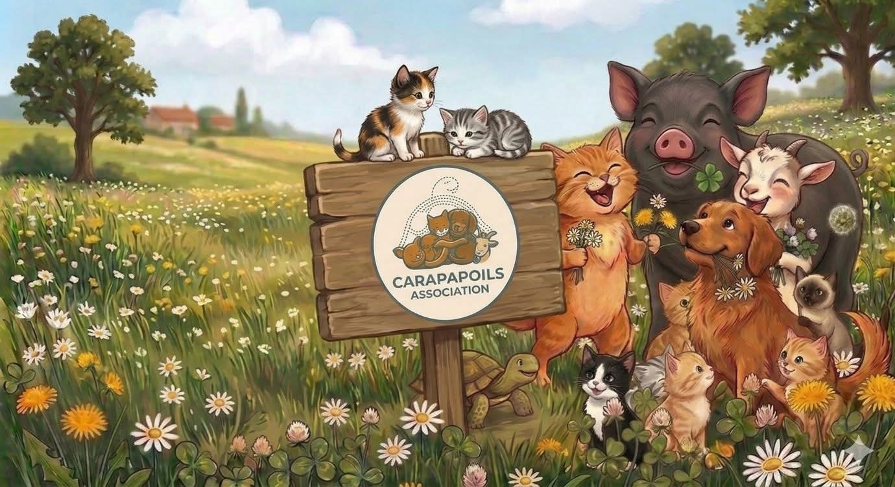

Sauvetage & Accueil
Nous recueillons les animaux trouvés, abandonnés ou victimes de maltraitance. Chaque animal reçoit un abri sécurisé, de la chaleur et de l'attention dès son arrivée.

Association de sauvetage d'animaux trouvés, abandonnés ou victimes de maltraitance — organisation d'événements de sensibilisation et de collecte de fonds pour leur alimentation et leurs soins.
Avant que Carapapoils voie le jour, nous étions une famille qui a toujours vécu entourée d'animaux, de toutes espèces. Depuis toujours, nous avons grandi et évolué avec un quotidien rythmé par le soin des animaux qu'on recueillait. Lorsqu'un animal avait besoin d'aide, il était naturel pour nous de lui ouvrir notre porte. Ils n'étaient par ailleurs, à nos yeux, jamais de simples animaux mais de véritables membres de la famille.
Au fil des années, cette façon de vivre et ces valeurs ont rassemblé autour de nous des amis qui partageaient la même vision et le même quotidien. Leur amour des animaux, leur confiance, leur engagement et leur envie d'agir à nos côtés nous ont permis d'aller plus loin. Sans eux, Carapapoils n'aurait jamais vu le jour.
C'est ainsi qu'au début du mois de mars 2026 est née l'association Carapapoils !
Créer Carapapoils n'était pas une façon de commencer quelque chose de nouveau. C'était une façon de donner un cadre à ce que nous faisions déjà depuis toujours, afin de pouvoir accueillir et protéger davantage d'animaux, organiser plus de sauvetages et leur offrir les meilleures chances de trouver une famille aimante.
"Chaque animal arrive avec son histoire, ses peurs, ses blessures… Alors, nous les soignons, les aidons à reprendre confiance en l'humain."
Aujourd'hui, nous accueillons différentes espèces, avec toujours le même engagement. Chaque animal arrive avec son histoire, ses peurs, ses blessures ou parfois simplement un immense besoin d'affection car il a perdu sa maman trop tôt ou a été abandonné. Alors, nous leur offrons un abri, la sécurité, de la bonne nourriture, et des câlins. Nous les aidons à ne plus avoir peur et à reprendre confiance en l'humain, à se socialiser avec les autres chats et chiens, voire avec les autres espèces et à découvrir la douceur d'un foyer. Nous leur apprenons à être aimés… mais aussi à savoir aimer. Et, lorsqu'ils sont prêts, nous leur cherchons une famille qui aura plaisir à les accueillir pour la vie.
Aujourd'hui nous sommes une toute petite équipe unie par la passion des animaux mais avec des moyens logistiques, financiers et humains limités. Nous fonctionnons sur la base de la solidarité, du partage, de l'entraide et de la récupération.
Si vous aussi vous partagez ces valeurs et avez envie de faire quelque chose pour ces petites boules d'amour, rejoignez-nous. Il y a tellement de choses à faire, tellement de manières de contribuer à ce beau projet. Ensemble nous pourrons faire encore plus et encore mieux.
Merci à tous ❤️
Nous recueillons les animaux trouvés, abandonnés ou victimes de maltraitance. Chaque animal reçoit un abri sécurisé, de la chaleur et de l'attention dès son arrivée.
Chaque animal bénéficie des soins vétérinaires nécessaires à sa santé et à son bien-être avant toute adoption.
Ils sont proposés à l'adoption avec au moins 2 visites vétérinaires, et sont vermifugés, soignés, vaccinés et identifiés par puce électronique.
Nous aidons chaque animal à reprendre confiance en l'humain, à se socialiser avec ses congénères et aux chiens, et à découvrir la douceur d'un foyer aimant.
Quand ils sont prêts, nous leur cherchons une famille pour la vie — une famille qui aura plaisir à les accueillir et à les aimer comme ils le méritent.
Nous organisons des événements pour sensibiliser le public à la cause animale, créer du lien et récolter des fonds pour financer nos actions.
Grâce à vos dons — nourriture, matériel ou soutien financier — nous pouvons aider toujours plus d'animaux. Chaque geste compte.
Carapapoils vit grâce à la générosité de chacun. Voici ce dont nous avons besoin au quotidien pour prendre soin de tous nos pensionnaires.
Vous avez quelque chose à donner ? Contactez-nous, on vient récupérer !
Nous contacterChacun de ces animaux a une histoire, un caractère, et un immense besoin d'amour. Si vous pensez pouvoir leur offrir un foyer pour la vie, contactez-nous — nous serons heureux d'en discuter avec vous.
Comme chaque été, beaucoup de chatons sont retrouvés seuls sans leur maman. Depuis mi-mai, nous avons recueilli 18 chatons, de 1 jour à 6 semaines.
La présentation des chatons proposés à l'adoption est en construction. Revenez bientôt ou contactez-nous directement.
Me renseigner sur les chatonsVous souhaitez adopter l'un de nos animaux ou en savoir plus ? Remplissez ce formulaire et nous vous répondrons dans les plus brefs délais. Vous pouvez aussi nous écrire directement à contact.carapapoils@gmail.com ou au 06 80 72 22 83.
Notre association vit grâce à la générosité et à l'investissement de celles et ceux qui nous soutiennent. Si nos valeurs sont aussi les vôtres, nous serons heureux de vous accueillir dans la famille Carapapoils.
Une adhésion accessible pour que chacun puisse rejoindre cette aventure. Rejoindre Carapapoils, c'est agir concrètement pour les animaux.
Adhérer maintenantLes dons financiers ouvrent droit à une réduction d'impôt de 66 %, dans les conditions prévues par l'article 200 du Code général des impôts.
Parlez de nous autour de vous, partagez nos publications et aidez-nous à faire connaître la cause animale. Chaque partage peut changer une vie.
Avec votre aide, nous pourrons offrir à toujours plus d'animaux ce qu'ils méritent : une seconde chance, de la sécurité… et surtout, beaucoup d'amour.
Les frais d'adoption — notamment pour les chatons — correspondent uniquement à une participation aux frais vétérinaires engagés pour leur santé et leur bien-être.
Une question, une adoption, un animal à signaler ou simplement l'envie de rejoindre l'aventure ? Nous vous répondons avec plaisir.